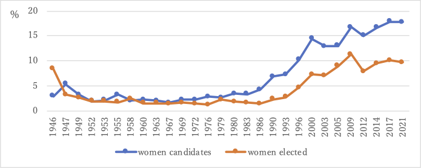
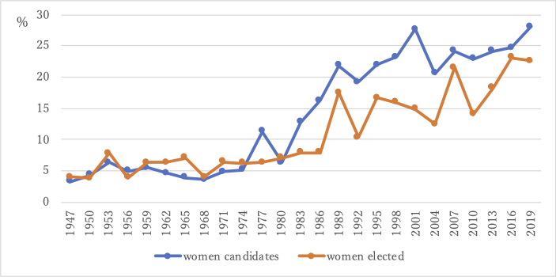

2022 Upper House Election started: female candidates exceeded 30% finally
07/01 2022
Author: Yuki Tsuji
Trends in the percentages of female candidates and winners are shown in Fig. 1 and Fig. 2. The share of female candidates as well as that of elected women have been always higher in the House of Councillors (upper house) than in the House of Representatives (lower house). While women occupy 23.1% of the total seats in the upper house (before election), women’s share falls to 9.7% in the lower house.


The largest reason for the small number of female MPs is the small number of female candidates. In particular, the Liberal Democratic Party (LDP), which is a center-right ruling party, as well as its coalition partner KOMEITO, have shown poor performances in political recruitment of female candidates. As Table 1 demonstrates, in the previous upper house election in 2019, the percentages of female candidates affiliated with these two parties were extremely low. While the situation has improved in 2022, perhaps thanks to the enhanced monitoring by media and concerned citizens, the LDP and KOMEITO have not caught up with opposition parties in their attempts to recruit more women.
| name of major parties | female candidates in the 2019 election | target number for female candidates, voluntarily set by parties for the 2022 election | female candidates in the 2022 election |
|---|---|---|---|
| Liberal Democratic Party | 14.60% | 30% in the PR list | 30.3% in the PR list, 23.2% in total |
| KOMEITO | 8.30% | not announced | 20.80% |
| Japan Innovation Party | 31.80% | not announced | 30.40% |
| Constitutional Democratic Party | 45.20% | 50% in total | 51.00% |
| Democratic Party for the People | 35.70% | 35% in total | 40.90% |
| Social Democratic Party | 71.40% | 50% in total | 41.70% |
| Japan Communist Party | 55.00% | 50% in total | 55.20% |
On the other hand, we must pay attention to the women’s chances of being elected. Table 2 compares winning rates between male and female candidates running from the same party in the 2019 upper house election.
| Women | Men | |||||
|---|---|---|---|---|---|---|
| name of major parties | number of candidates | number of elected | winning rates (%) | number of candidates | number of elected | winning rates (%) |
| Liberal Democratic Party | 12 | 10 | 83.3 | 70 | 47 | 67.1 |
| KOMEITO | 2 | 2 | 100.0 | 22 | 12 | 54.5 |
| Japan Innovation Party | 7 | 1 | 14.3 | 15 | 9 | 60.0 |
| Constitutional Democratic Party | 19 | 6 | 31.6 | 23 | 11 | 47.8 |
| Democratic Party for the People | 10 | 1 | 10.0 | 18 | 5 | 27.8 |
| Social Democratic Party | 5 | 0 | 0.0 | 2 | 1 | 50.0 |
| Japan Communist Party | 22 | 3 | 13.6 | 18 | 4 | 22.2 |
It is noteworthy that female candidates of the LDP were more likely to be elected than male candidates of the same party, and the same applied to the KOMEITO candidates. In contrast, the winning rates of female candidates of opposition parties were lower than those of male candidates. Since the election rule of the House of Councillors has an effect of promoting not only competition among political parties but also competition among candidates running from the same party, it is likely that candidates’ genders have some influence in both negative and positive ways, in the candidate selection processes by parties, resource mobilization in campaigns, and voters’ choices. In any case, how many more women will take the seats in the upper house is left in the hands of voters.